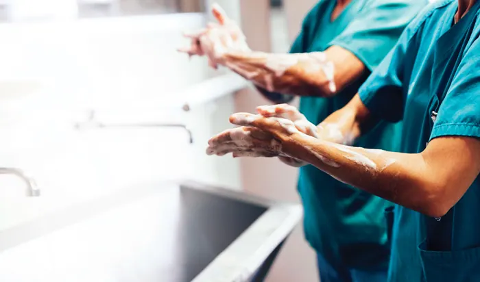

کنترل عفونت در بیمارستان
شاید برای شما سؤال شده باشد که کنترل عفونت در بیمارستان چگونه صورت میگیرد؟ با ما همراه باشید که پاسخ سؤال خود را دریابید. همچنین در این مقاله سعی کردیم که درباره تاریخچه و ویژگیهای چنین کاری برای شما مطالبی جمعآوری کنیم و بتوانید به اطلاعات خود بیفزایید.
استفاده از کیسه ساکشن از مؤثرترین راهها برای کنترل عفونت در بیمارستانها است.
آشنایی با تاریخچه کنترل عفونت
کنترل عفونت در بیمارستان نخستین بار در سال 1950 در کشور ایالات متحده آمریکا اجرا شد. البته این طرح اجرا شده بیشتر در پاسخ به اپیدمی سراسری استافیلوکوکوس اورئوس انجام شد. زیرا لازم بود تمامی بیمارستانها چنین کاری را به رسمیت بشناسند و نظارتی بر عفونت بیمارستانها داشته باشند.
بیمارستانها و کلینیکها منبع بیماری هستند!
همه ما خوب میدانیم که مراکز بهداشتی به خاطر رفت و آمد بیماران همیشه منبعی برای انواع و اقسام گوناگونی از بیماریها به شمار میروند! البته این امر همیشه اینطور نیست و تمامی مراکز بهداشتی باید یک سری از پروتکلها را رعایت کنند.
این پروتکلها در واقع کنترل عفونت در بیمارستان یا مراکز بهداشتی هستند. اگر چنین کاری انجام نشود، مشکلات و بیماریهای بسیاری به مردم سرایت خواهد کرد. حتی ممکن است بیماریها به صورت گستردهای شیوع پیدا کرده و کل دنیا را درگیر خود کنند.
راههای کنترل گسترش بیماریها و آلودگیها چیست؟
به راستی برای کنترل عفونت در بیمارستان باید چه اقداماتی انجام شود؟ در ادامه برخی از راههای ساده جهت کنترل بیماریها و عفونتها را به شما ارائه خواهیم کرد. رعایت کردن این اصول، حتی ممکن است شما را تا 80 درصد در برابر بیماریها مقاومتر کند.
پروتکلهایی که برای کنترل عفونت باید رعایت کرد.
1. استفاده از کیسه ساکشن یکبار مصرف
دستگاه ساکشن یکی از پر استفادهترین دستگاهها در تمامی مراکز بهداشتی به شمار میرود. این دستگاهها به طور کلی 2 نوع هستند: سانترال و پرتابل. دستگاههای سانترال معمولاً مخازن ساکشنی دارند که میتوان از آنها چندین بار برای عمل ساکشن استفاده کرد.
اما اینکه از یک مخزن چندین بار استفاده میشود، ممکن است باعث بروز بیماری در بیمارانی که به دستگاه ساکشن نیاز دارند، بشود. اما در مقابل دستگاههای ساکشن پرتابل از مخازن و کیسه ساکشن یکبار مصرف استفاده میکنند.
استفاده از این کیسههای یک بار مصرف هم به کنترل عفونت در بیمارستان یا مراکز بهداشتی کمک میکند، هم باعث کاهش هزینههای بسیاری در این مراکز خواهد شد. اما نکته اصلی در واقع کنترل عفونتها است! استفاده از چنین روشی میتواند تا حد بسیاری از شیوع عفونتها جلوگیری کند!
2. شستن دستها حداقل به مدت 20 ثانیه!
شستن دستها باید سنگ بنای کاهش HAI (عفونتهای اکتسابی بیمارستانی) باشد. برای این کار دستها را با آب گرم و صابون به مدت حداقل 20 ثانیه با شدت بشویید. علاوه بر این کار، همه کارکنان و افراد در مراکز بهداشتی باید تشویق شوند که حتماً دستهای خود را قبل از نوشیدن، غذا خوردن، مراقبتها و بین مراقبت از بیماران بشویند.
روشهای مؤثر و مهم کنترل عفونتها یا بیماریها چیست؟
3. نوشتن قوانین و سیاستهای کنترل عفونت
برای تمامی افرادی که به بیمارستانها یا مراکز بهداشتی مراجعه میکنند و همچنین تمامی پرسنل و کادر درمان، باید قوانین سیاستهایی جهت کنترل عفونت در بیمارستان نوشته و اجرا شوند. با کمک این راهکار تا حد زیادی میتوان از شیوع بیماری و انتقال عفونتها میان افراد جلوگیری کرد!
4. کشف و تشخیص فاکتورهای سرایت عفونت و بیماری
برای مثال عفونتهای بسیار مسری، مانند کلستریدیوم دیفیسیل (c.diff) باید در اولین فرصت شناسایی شوند. فرض کنید که هر بیماری که مبتلا به اسهال شده است، باید بستری شود، همچنین وی باید فوراً مورد آزمایش قرار گیرد! در غیر این صورت جامعه ممکن است خسارات جانی بسیار زیادی متحمل شود.
همینطور افرادی که مشکلات تنفسی دارند، باید برای آنفولانزا آزمایش شوند. زیرا بیماریهای تنفسی راحتتر به سایر افراد انتقال پیدا میکنند. همین موضوع باعث میشود که درصد زیادی از یک جامعه مبتلا به بیماریهای تنفسی شوند.
5. اجرای دورههای کنترل عفونت
کارکنان باید بدانند که چگونه عفونتها را شناسایی کرده و از گسترش آنها جلوگیری کنند! در نتیجه، همه مراکز درمانی باید آموزش مداوم و مکرر در مورد کنترل عفونت برای کارمندان خود ارائه دهند. این دورهها شامل آموزش در مورد پاتوژنهای خونی و عفونتهای منتقله از طریق قطرات و غیره میشود.
6. استفاده از دستکش الزامی است
از دیگر راههای کنترل عفونت در بیمارستان، استفاده از دستکش است. متخصصان درمانهای بهداشتی ممکن است همیشه هنگام تعامل با بیماران از دستکش استفاده نکنند! اما در صورت امکان قبل از هرگونه تماس با خون یا مایعات بدن بیماران، در زمان تعویض ملحفه یا تخلیه زباله، باید از دستکش استفاده کرد!
7. سطوح را ضد عفونی و تمیز نگه دارید
هر اتاق در یک مرکز بهداشتی باید به طور کامل با محلولهای پاککننده که حاوی سفیدکننده هم هستند، تمیز شود. این امر به جلوگیری از انتقال تصادفی عفونتها و بیماریها زمان پذیرش و بستری کردن بیماران جدید کمک بسیاری میکند.
علاوه بر این، بخشهای غیر بیمار مانند اتاق استراحت و اتاق پرستاران باید روزانه تمیز شوند!
کنترل عفونت چه کاربردها یا ویژگیهایی دارد؟
هدف اصلی کنترل عفونت در هر مرکز بهداشتی یا بیمارستانی، کاهش دادن ریسک ابتلای افراد به بیماری خاصی است. همچنین میتوان گفت برای کاهش تلفات انجام این کار الزامی است!
1. باعث نجات جانها میشود!
همانطور که اشاره کردیم، محدود کردن بیماریها یا عفونتها ریسک ابتلای افراد به بیماری خاصی را کاهش میدهد. به خصوص برای کسانی که سیستم ایمنی بدن آنها بسیار ضعیف عمل میکند، این کار میتواند تا حد چشمگیری جان آنها را در امان نگه دارد!
2. کاهش هزینههای درمانی
اعمال طرحهای کنترل عفونت در بیمارستانها نه تنها به کاهش عفونی شدن و بیمار شدن افراد کمک میکند، بلکه باعث کاهش هزینههای درمان اضافی یا درمانهای متعدد و مختلف بیماران یا حتی پرسنل میشود.
3. جلوگیری از شیوع بیماریها میشود
مهمترین کاربردی که کنترل عفونت در مراکز درمانی و بیمارستانها دارد، جلوگیری از انتشار بیماریها از بخشی به بخشهای دیگر است. همچنین همین موضوع باعث میشود که از انتشار و شیوع بیماریها به خارج از بیمارستان یا مراکز بهداشتی هم جلوگیری شود!
جمعبندی
کنترل عفونت در بیمارستان برای اولین بار در سال 1950 در ایالات متحده آمریکا برای جلوگیری از بیماری اپیدمی اجرا شد. این طرح مزایای بسیار زیادی، برای مثال کاهش درصد احتمال انتقال بیماری بین افراد، کاهش هزینهها و کاهش تلفات جانی میشود. همچنین استفاده از کیسه ساکشن یکی از راهکارهای مهم در کنترل عفونت در این طرح است.